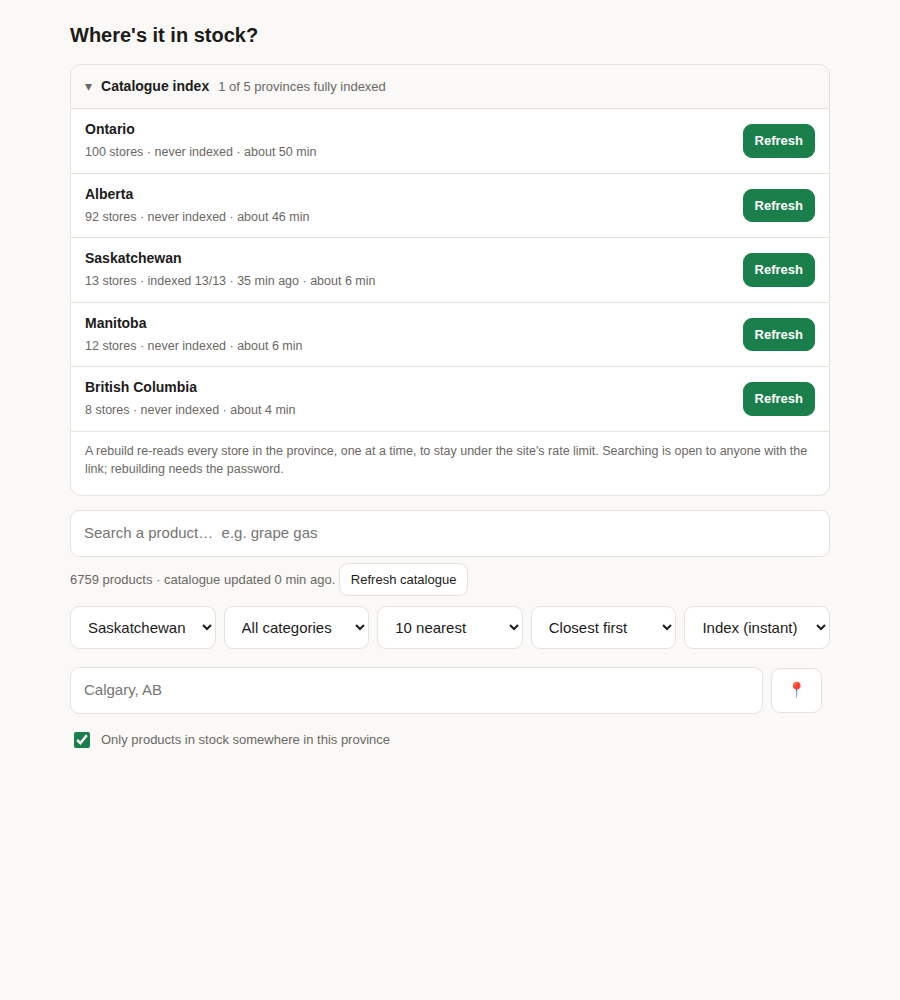
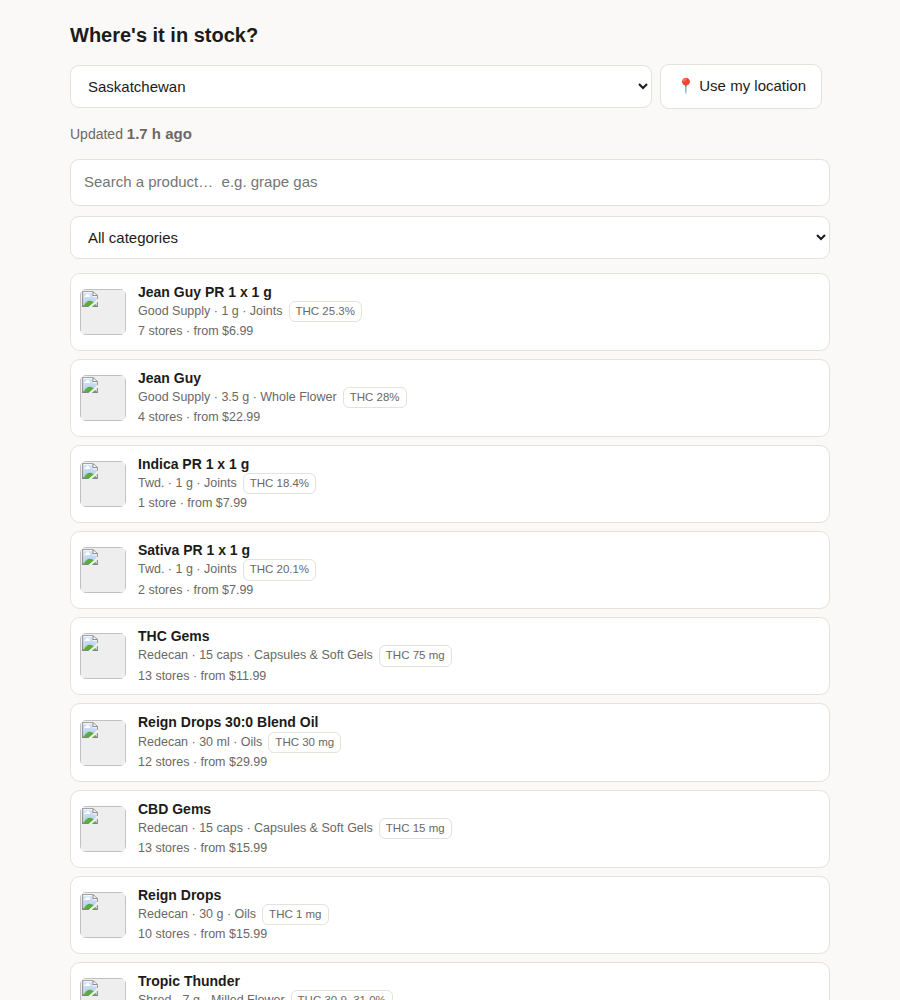
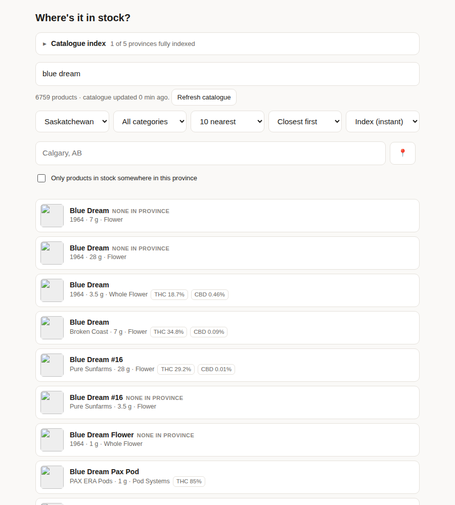
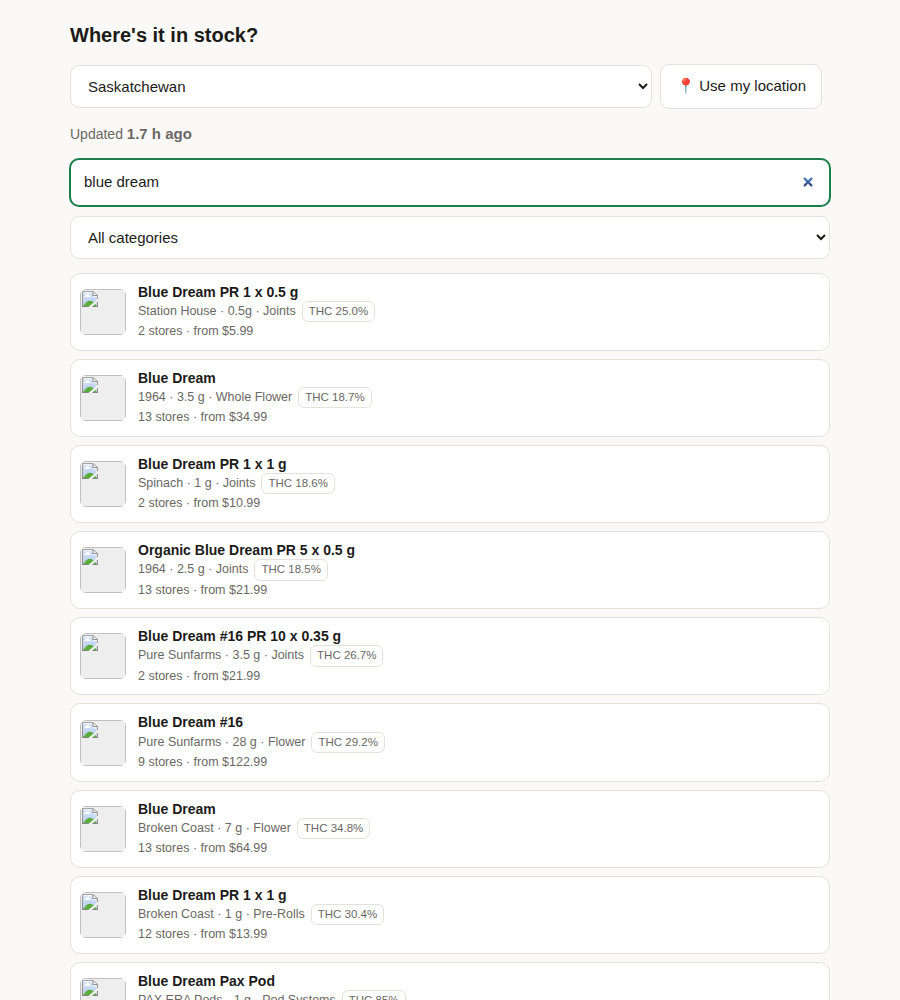
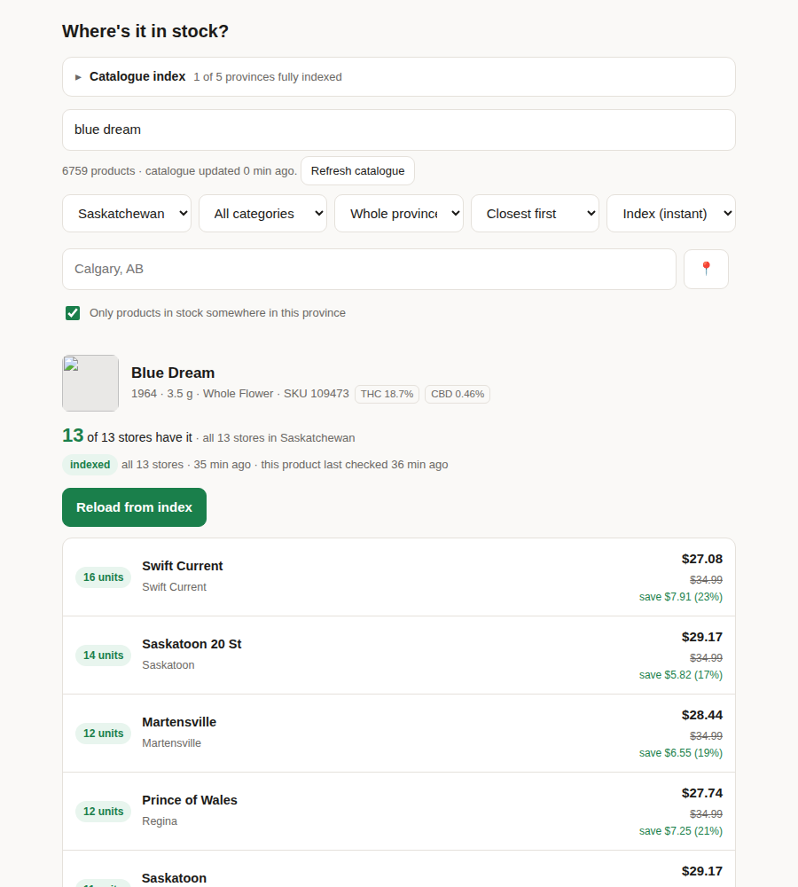
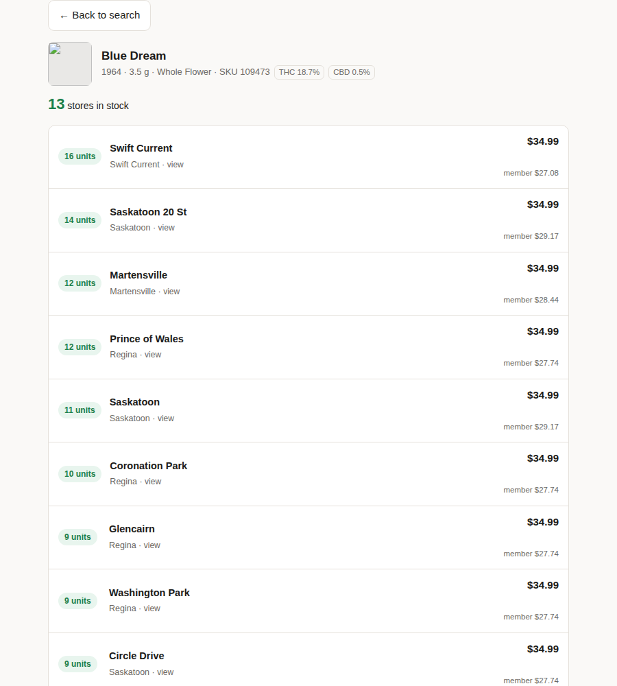

The move from the desktop app (web/index.html served by server.py) to the static GitHub Pages site (site/index.html) kept the core lookup but lost a lot around it. Both were run side by side on the same real Saskatchewan data from the 02:42 UTC scrape, and compared feature by feature against the code.
These change what a shopper can find or what they're told, not just what the page offers.
The old search matched title, brand, category and size, ranked best match first. The new one matches title and brand only, in no particular order. "pre-roll" finds 232 in-stock products in the old app, 7 on Pages. "edibles" and "3.5 g" find none.
The old app led with the price a member pays, struck through the full price and said "save $7.91 (23%)". Pages leads with the full $34.99 and puts the member price in small grey text. It also lost the "Elite only" badge.
The old app could show products nobody in the province carries, marked "none in province", and said how many it hid (27 for "blue dream"). Pages only knows about in-stock products, so an unstocked product just gives "Nothing matched that."
The old app took a city or postal code and could limit to the 5, 10 or 25 nearest stores or sort by most stock. Pages only has the browser's location button, always lists the whole province, and has no sort choice.
In-stock products in Saskatchewan that each search finds. Old app: the /api/search total with "only in stock" ticked. Pages: the site's own matching rule applied to the published saskatchewan.json.
| Search | Old app | Pages | Results | Lost |
|---|
Most losses are category words (the site files pre-rolls under "Pre-Rolls" but titles say "PR") and sizes. "sativa" finds one more on Pages because Pages also covers a product the old app's catalogue file didn't list.
900px-wide screenshots of both pages, with Saskatchewan selected. Product thumbnails show as broken images in every shot because the machine that took them can't reach Shopify's image server; they load normally for visitors. The old app's panel shows other provinces as "never indexed" only because that test copy held Saskatchewan's data alone.






"Could come back" says what it would take on a static site. Line references point at the code each claim was checked against.
| Feature | Old app | Pages site | Status | Could come back? |
|---|---|---|---|---|
| Finding a product | ||||
| What search matches | Title, brand, category and size, every word required (catalog.py:183) | Title and brand only (matchProduct in site/index.html) | Lost | Yes, easily. Category and size are already in the published JSON. |
| Result order | Ranked: exact title, then title starts with it, then phrase in title, then brand/category matches; shorter titles first | Whatever order the data file happens to be in | Lost | Yes, easily. Port the ranking to the page. |
| Products not stocked in the province | "Only products in stock somewhere" switch; unstocked ones labelled "none in province"; says how many were hidden | Only in-stock products are published, so they can't be shown or counted | Lost | Yes. Publish the product catalogue (about 6,800 products) alongside the stock files. |
| Category list | Categories with product counts, biggest first, e.g. "Flower (412)" | Category names only, alphabetical | Changed | Yes, easily. |
| Province list | Shows store count, e.g. "Ontario (100)" | Name only | Lost | Yes, easily. The count is already in data/index.json. |
| Where it is and what it costs | ||||
| Price shown first | Member or ELITE price large, full price struck through, "save $X (Y%)" | Full price large, member price small, no saving shown | Changed | Yes, easily. Both prices are in the data. |
| "Elite only" badge | Shown on ELITE-tier products | Missing, though the data already marks ELITE prices (2,547 Saskatchewan store rows) | Lost | Yes, easily. Only the page needs changing. |
| Location by city or postal code | Type a place; the server looks it up on OpenStreetMap | Browser location button only | Lost | Probably. The page could look up OpenStreetMap itself, or match a postal-code prefix from a small bundled table. |
| How many stores | 5, 10 or 25 nearest, or whole province | Always the whole province | Lost | Yes, easily. |
| Store order | Choice: closest first, or most stock first | Fixed: closest when located, otherwise most stock | Lost | Yes, easily. |
| Stores that don't have it | "13 of 13 stores have it" plus "Show N without it" listing the rest, greyed | Only stores that have it are listed | Lost | Yes. The page already knows every store in the province. |
| How fresh this product's answer is | Per product: "indexed all 13 stores · 35 min ago · this product last checked 36 min ago", or "partly indexed" | One line for the whole province: "Updated 1.7 h ago" | Lost | Yes. Per-store scrape times are already published. |
| Needs a server (can't run on GitHub Pages) | ||||
| Live check | "Check live now" re-asks every store right now, with a progress bar and time estimate (fast API or real-browser mode) | None; data is as fresh as the last hourly run | Server only | Not directly. Closest: a button that starts a one-province run in GitHub Actions, which needs a GitHub login. |
| Rebuild a province | Catalogue index panel: Refresh, Resume, Cancel per province, progress, time estimate, request-budget stats | Done in the Actions tab instead (Scrape all provinces / Scrape one province) | Server only | Moved to GitHub, not gone. |
| Catalogue status and refresh | "6759 products · catalogue updated 0 min ago" and a Refresh button | None | Server only | Partly. Could be a scheduled job too. |
| Admin password | Unlocks the admin-only actions above | Not needed: nothing on the page can trigger a scrape | Server only | Not needed. |
| Out-of-date build warning | Banner with "Rebuild and restart" when the .exe was older than its source | Not applicable: the site is always built from main | Server only | Not needed. |
| New on Pages | ||||
| Always online | Only while the desktop app and its tunnel were running | Public URL, no PC needed, refreshed hourly by GitHub Actions | New | — |
| Data age up front | Only inside a product view | "Updated 1.7 h ago" under the province, full time on hover | New | — |
| Failed-store notice | None on the search page | Says when stores failed on the last run and that older data is shown | New | — |
| Browse without typing | Needed at least 2 letters | Lists products straight away; category alone works as a filter | New | — |
| Store count and lowest price on cards | Not shown until you open a product | "7 stores · from $6.99" on every card | New | — |
| Link to the product at each store | Not in the list | "view" opens the product on cannacabana.com for that store | New | — |
| Remembers your province | Always opened on the configured default | Remembered in the browser | New | — |
| Bugs found while comparing | ||||
| Small potency values rounded | CBD 0.46% | CBD 0.5%: the page's port of potency() rounds to one decimal where Python kept two | Bug | Easy fix. |
| Failed stores never named | — | The notice tries to list failed stores (run.failed_stores), but the export never writes that field, so it can only give a count | Bug | Easy fix in the export step. |
server.py run locally from main with the live history-saskatchewan.db (scraped 02:42–02:52 UTC).gh-pages branch served locally, same scrape.web/index.html, server.py, catalog.py, site/index.html, ci/export_province.py.